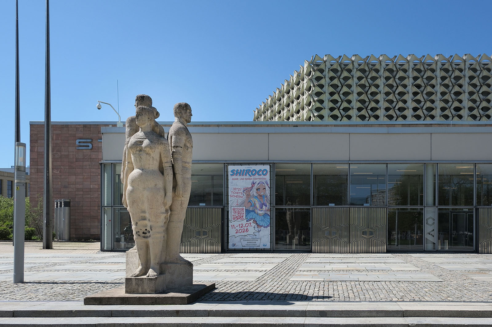
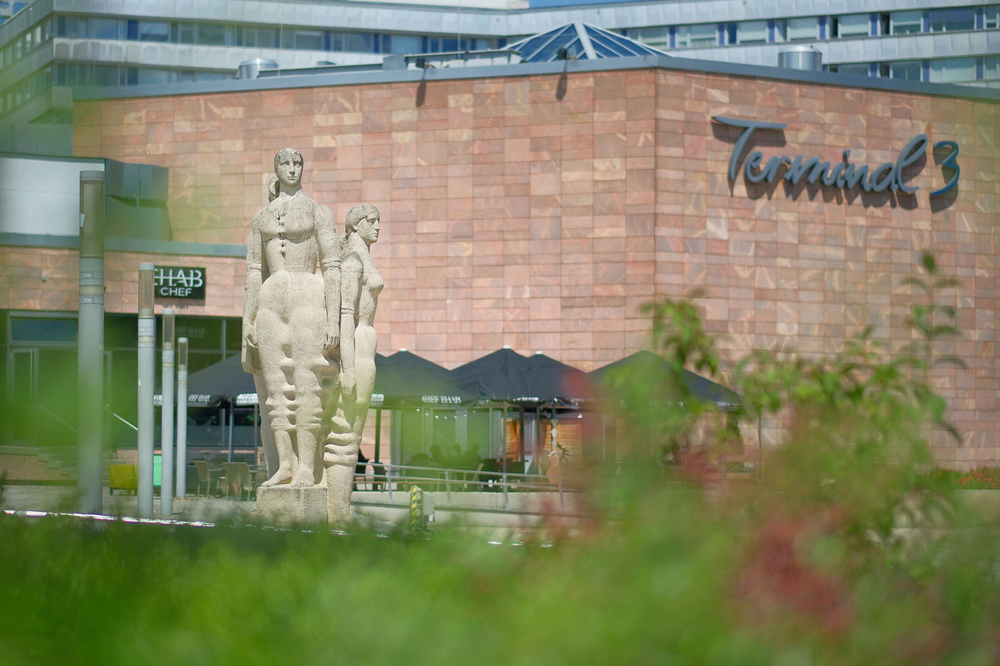
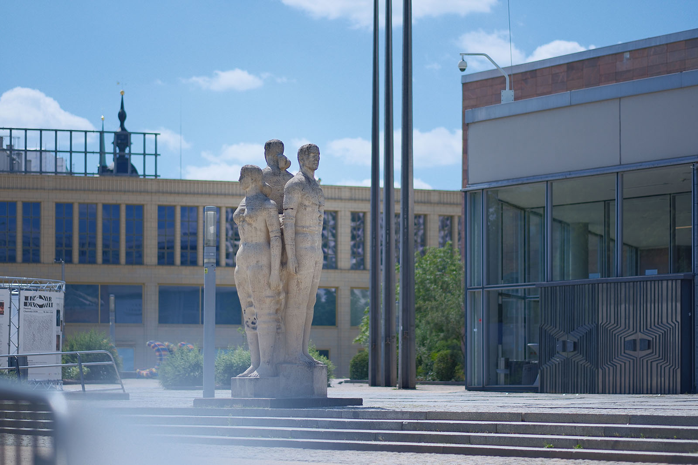
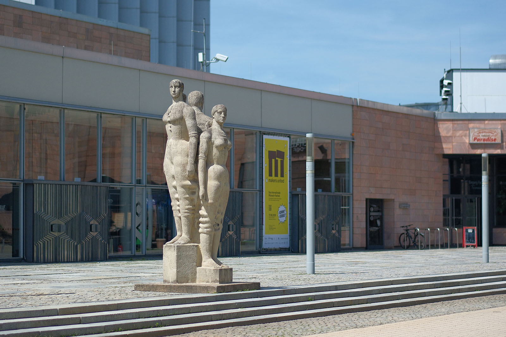

Recherche und Werkbeschreibung: Roman Pilz. Fotografien: Frank Krüger. Text und Bild wechseln sich wie in einem Magazin ab. Ein Klick auf ein Bild öffnet die Großansicht.
Die Betonplastik "Würde, Schönheit und Stolz des Menschen im Sozialismus" wurde 1974 als Allegorie auf die Ideale der sozialistischen Gesellschaft aufgestellt. Das durch den Titel vermittelte Menschenbild stellt den politischen Anspruch, jedem Menschen ein würdiges Leben, also die Existenzsicherung durch Arbeit, den Erhalt des Lebens in der Gemeinschaft und den Genuss des Lebens durch gehaltvolle Freizeitgestaltung, zu bieten. Sind diese Ziele erreicht, stellen sich Schönheit als ästhetisches Ideal und Stolz auf das gemeinsam Erreichte fast schon von selbst ein. Diese Ideale sind im eigentlichen Sinne allgemeingültig und daher können die Figuren auch nach dem Ende des real existierenden Sozialismus in Deutschland diesen Anspruch weiter hochhalten.
Gerd Jaeger wurde 1927 in Förderstedt (Sachsen-Anhalt) geboren und verstarb 2019 in Dresden. Jaeger begann, nach Kriegsdienst und Gefangenschaft, 1949 an der Hochschule für Baukunst und Bildende Künste in Weimar (heute: Bauhaus-Universität) bei Martin Domke und Otto Herbig zu studieren. Als der Bereich "Bildendende Künste" 1951 in Weimar geschlossen wurde wechselte er an die Hochschule für Bildende Künste Dresden.
Dort studierte er bis 1953 Plastik und Bildhauerei bei Eugen Hoffmann und Walter Arnold. Nach seiner Aspirantur wird Jaeger ab 1956 Assistent an der HfBK, 1963 Dozent und ist schließlich von 1971 bis 1994 Professor und Leiter einer Bildhauerklasse in Dresden. Im Mittelpunkt seines bildhauerischen Werks steht die menschliche Figur.
In den 1970er Jahren experimentiert er in einem großen Zyklus mit dem Zement und Steinguss. Daneben schuf Jaeger auch ein umfangreiches zeichnerisches Werk, anfangs figürlich und nah an den Fragen der Bildhauerei, später nur noch abstrakt. Ab der Mitte der 1990er Jahre beginnt er sich auch intensiv mit der Malerei auseinanderzusetzen.
Viele seiner Werke sind im öffentlichen Raum aufgestellt. Seine bekanntestes Werk ist das Ensemble von fünf Eingangstüren am Kulturpalast Dresden, die im Relief Episoden aus der Geschichte Dresdens illustrieren. Jaeger ist als Bildhauer seit 1955 Mitglied im Verband der bildenden Künstler und stellte regelmäßig auf allen bedeutenden Ausstellungen der DDR aus.
Seine Werk wurde mehrfach ausgezeichnet, unter anderem 1987 mit dem Nationalpreis der DDR.
Konkret sind vom Dresdner Professor für Bildhauerei Gerd Jaeger drei Figuren als eine Einheit in Beton gegossen worden. Die zwei Frauen und der Mann stehen Rücken an Rücken als Gruppe, jeweils auf einem stufenweise höher angeordneten, eigenen Sockel. Obwohl die Plastik rundum gestaltet und erfahrbar ist, scheint die zum Stadtpark ausgerichtete Seite die Schauseite und Mittelachse des Bildes anzugeben. Schaut man so, notwendig von unten, auf die Figuren weiter oben, hat man alle drei auf einmal im Blick: Die Figuren links und rechts wenden ihren Kopf in Richtung auf die unten stehende. Dahinter kommt auch die mit einem abstrakten Relief gestaltete Fassade der Stadthalle als Hintergrund in Sicht.
Alle Figuren sind statisch stehend positioniert, mit blanken Füssen und angelegten Armen. Ihre Kleidung scheint nur aus dünnem Tuch zu bestehen, das stellenweise gerafft und gerollt eng über der Anatomie der Gestalten liegt oder diese sogar abstrahierend umzuformen scheint. Die plastisch ausgeformten Rollen werden über die Konturen der Figuren weiter hinaus ausgebildet und laufen stellenweise zusammen – die wiederholten, ringförmigen Strukturen verbinden die Figuren an Beinen und Hüften.

Die Drei blicken über unsere Köpfe hinweg, weit in die Stadt und ihre Zukunft hinein. Ein fast archaisches Lächeln passt gut zu ihrer förmlichen Haltung. Durch die höhenmäßige Staffelung ergibt sich insgesamt eine harmonische Gliederung und die sanften Rundungen des gegossenen Steins fügen sich wundervoll ein.

Gemeinsam mit weiteren Kunstwerken im Innen- und Außenbereich schmückt die Plastik die Stadthalle, die bei ihrer Eröffnung den gefeierten Abschluss des seit dem Krieg projektierten Wiederaufbaus des Chemnitzer Zentrums bildete.

Blick in die Zukunft
Die Betonplastik „Würde des Menschen“ (1974) von Gerd Jaeger im Stadthallenpark
